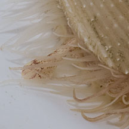

|
|
| bivalves text index | photo index |
| Phylum Mollusca > Class Bivalvia > Family Limidae |
| Common
file clam Lima vulgaris Family Limidae updated May 2020 Where seen? This clam is sometimes seen are attached to rocks and underside of stones and corals. It was previously known as Lima lima. Features: 4- 6cm. The two-part shell is thick with clear ridges, usually white or yellowish. The valves can close completely, with the tentacles retracted. Tentacles long, usually pale without markings. These tentacles are sticky and can break off if the animal is distressed. The animal can swim by 'clapping' its valves, but it is not as active as the Swimming file clam (Limaria sp.). Human uses: In the Philippines, the shells are used to make ornaments. Status and threats: This animal is listed as "Vulnerable" on the Red List of threatened animals of Singapore. |
 Sisters Island, Aug 12 |
 Foot extended out of the shell. |
 With tentacles open. |
| Common file clams on Singapore shores |
On wildsingapore
flickr
|
| Other sightings on Singapore shores |
|
Links
References
|